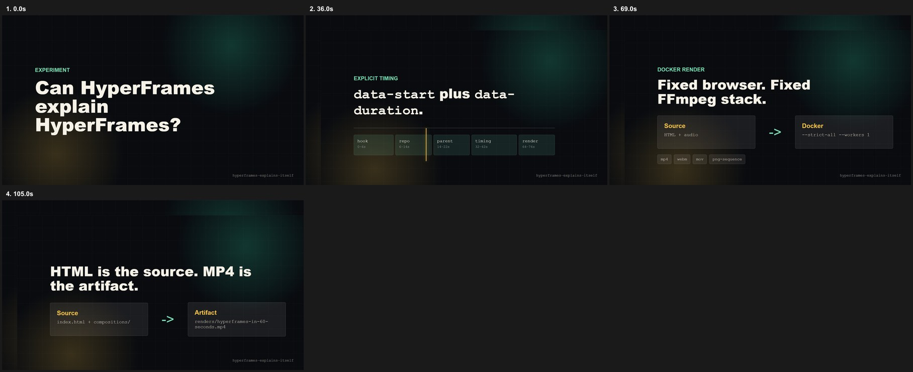

Real media on the timeline.
The source MP4 starts at 32 seconds, plays for 6 seconds, keeps low-volume audio, and receives HTML overlays.
data-media-start="32"
data-volume="0.18"
track-index

The source MP4 starts at 32 seconds, plays for 6 seconds, keeps low-volume audio, and receives HTML overlays.